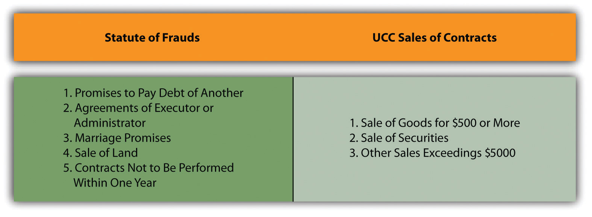

The general rule is this: a contract need not be in writing to be enforceable. An oral agreement to pay a high-fashion model $2 million to pose for photographs is as binding as if the language of the deal were printed on vellum and signed in the presence of twenty bishops. For three centuries, however, a large exception grew up around the Statute of Frauds, first enacted in England in 1677 under the formal name “An Act for the Prevention of Frauds and Perjuries.” The Statute of FraudsA rule requiring that certain contracts be evidenced by a writing, signed by the party to be bound, to be enforceable. requires that some contracts be evidenced by a writing, signed by the party to be bound. The English statute’s two sections dealing with contracts read as follows:
[Sect. 4]…no action shall be brought
unless the agreement upon which such action shall be brought, or some memorandum or note thereof, shall be in writing, and signed by the party to be charged therewith, or some other person thereunto by him lawfully authorized.
[Sect. 17]…no contract for the sale of any goods, wares and merchandizes, for the price of ten pounds sterling or upwards, shall be allowed to be good, except the buyer shall accept part of the goods so sold, and actually receive the same, or give something in earnest to bind the bargain or in part of payment, or that some note or memorandum in writing of the said bargain be made and signed by the parties to be charged by such contract, or their agents thereunto lawfully authorized.
As may be evident from the title of the act and its language, the general purpose of the law is to provide evidence, in areas of some complexity and importance, that a contract was actually made. To a lesser degree, the law serves to caution those about to enter a contract and “to create a climate in which parties often regard their agreements as tentative until there is a signed writing.”Restatement (Second) of Contracts, Chapter 5, statutory note. Notice, of course, that this is a statute; it is a legislative intrusion into the common law of contracts. The name of the act is somewhat unfortunate: insofar as it deals with fraud at all, it does not deal with fraud as we normally think of it. It tries to avoid the fraud that occurs when one person attempts to impose on another a contract that never was agreed to.
The Statute of Frauds has been enacted in form similar to the seventeenth-century act in every state but Maryland and New Mexico, where judicial decisions have given it legal effect, and Louisiana. With minor exceptions in Minnesota, Wisconsin, North Carolina, and Pennsylvania, the laws all embrace the same categories of contracts that are required to be in writing. Early in the twentieth century, Section 17 was replaced by a section of the Uniform Sales Act, and this in turn has now been replaced by provisions in the Uniform Commercial Code (UCC).
Figure 13.1 Contracts Required to Be in Writing
However ancient, the Statute of Frauds is alive and well in the United States. Today it is used as a technical defense in many contract actions, often with unfair results: it can be used by a person to wriggle out of an otherwise perfectly fine oral contract (it is said then to be used “as a sword instead of a shield”). Consequently, courts interpret the law strictly and over the years have enunciated a host of exceptions—making what appears to be simple quite complex. Indeed, after more than half a century of serious scholarly criticism, the British Parliament repealed most of the statute in 1954. As early as 1885, a British judge noted that “in the vast majority of cases [the statute’s] operation is simply to enable a man to break a promise with impunity because he did not write it down with sufficient formality.” A proponent of the repeal said on the floor of the House of Commons that “future students of law will, I hope, have their labours lightened by the passage of this measure.” In the United States, students have no such reprieve from the Statute of Frauds, to which we now turn for examination.
The rule: a promise to pay the debt of another person must be evidenced by some writing if it is a “collateral promiseA promise ancillary to an original promise, not made for the benefit of the party making it, that must be in writing to be enforceable. of suretyship (or ‘guaranty’).” A collateral promise is one secondary or ancillary to some other promise. A suretyOne who promises to act or pay upon the default of another: a guarantor. or guarantorOne who promises to pay or perform a contract obligation upon the default of another; a surety. (the terms are essentially synonymous) is one who promises to perform upon the default of another. Consider this:
A and B agree to pay C.
Here, both A and B are making a direct promise to pay C. Although A is listed first, both are promising to pay C. Now consider this:
B agrees to pay C if A does not.
Here it is clear that there must be another agreement somewhere for A to pay C, but that is not contained in this promise. Rather, B is making an agreement with C that is collateral—on the side—to the promise A is making to C. Sometimes the other agreement somewhere for A to pay C is actually in the same document as B’s promise to pay C if A does not. That does not make B’s promise a direct promise as opposed to a collateral one.
Suppose Lydia wishes to purchase on credit a coat at Miss Juliette’s Fine Furs. Juliette thinks Lydia’s creditworthiness is somewhat shaky. So Lydia’s friend Jessica promises Miss Juliette’s that if the store will extend Lydia credit, Jessica will pay whatever balance is due should Lydia default. Jessica is a surety for Lydia, and the agreement is subject to the Statute of Frauds; an oral promise will not be enforceable.Of course, if Jessica really did orally promise Miss Juliette’s to pay in case Lydia didn’t, it would be bad faith to lie about it. The proper course for Jessica is not to say, “Ha, ha, I promised, but it was only oral, so I’m not bound.” Jessica should say, “I raise the Statute of Frauds as a defense.” Suppose Jessica very much wants Lydia to have the coat, so she calls the store and says, “Send Lydia the fur, and I will pay for it.” This agreement does not create a suretyship, because Jessica is primarily liable: she is making a direct promise to pay. To fall within the Statute of Frauds, the surety must back the debt of another person to a third-party promisee (also known as the obligee of the principal debtor). The “debt,” incidentally, need not be a money obligation; it can be any contractual duty. If Lydia had promised to work as a cashier on Saturdays at Miss Juliette’s in return for the coat, Jessica could become surety to that obligation by agreeing to work in Lydia’s place if she failed to show up. Such a promise would need to be in writing to be enforceable.
The exception: the main purpose doctrineA promise to pay the debt of another need not be in writing to be enforceable if the promisor was motivated by a desire for advantage or benefit.. The main purpose doctrine is a major exception to the surety provision of the Statute of Frauds. It holds that if the promisor’s principal reason for acting as surety is to secure her own economic advantage, then the agreement is not bound by the Statute of Frauds writing requirement. Suppose, in the previous example, that Jessica is really the one who wants the fur coat but cannot, for reasons of prudence, let it be known that she has bought one. So she proposes that Lydia “buy” it for her and that she will guarantee Lydia’s payments. Since the main purpose of Jessica’s promise is to advance her own interests, an oral agreement is binding. Normally, the main purpose rule comes into play when the surety desires a financial advantage to herself that cannot occur unless she provides some security. For example, the board chairman of a small company, who also owns all the voting stock, might guarantee a printer that if his company defaulted in paying the bill for desperately needed catalogs, he would personally pay the bill. If his main purpose in giving the guarantee was to get the catalogues printed in order to stave off bankruptcy, and thus to preserve his own interest in the company, he would be bound by an oral agreement.Stuart Studio, Inc. v. National School of Heavy Equipment, Inc., 214 S.E.2d 192 (N.C. 1975). The same principle can be used to bind other creditors to oral agreements, as the bank discovered in Section 13.4.1 "The Statute of Frauds’ Main Purpose Doctrine" (Wilson Floors).
The rule: the promise by an executor or administrator of an estate to answer personally for the debt or other duty of the deceased is analogous to the surety provision—it must be evidenced by some writing if it is to be enforced over an objection by the would-be obligor. For an agreement to be covered by the statute, there must have been an obligation before the decedent’s death. Thus if the executor arranges for a funeral and guarantees payment should the estate fail to pay the fee, an oral contract is binding, because there was no preexisting obligation. If, however, the decedent has made his own arrangements and signed a note obligating his estate to pay, the executor’s promise to guarantee payment would be binding only if written.
The exception: the main purpose exception to the surety provision applies to this section of the Statute of Frauds as well as to the “promises to pay the debts of another” section, noted earlier.
The rule: if any part of the marriage or the promise to marry consists also of a promise to exchange some consideration, the Statute of Frauds requires that part to be evidenced by some writing.Restatement (Second) of Contracts, Section 125. Mutual promises to marry are not within the rule. John and Sally exchange promises to marry; the promise would not be unenforceable for failure to be evidenced by some writing. (Of course courts are very unlikely to force anybody to keep a promise to marry; the point is, the Statute of Frauds doesn’t apply). But if Sally understands John to say, “If you marry me, I will deed to you my property in the Catskill Mountains,” the part about the property would need to be evidenced by some writing to be enforced over John’s denial. The Statute of Frauds governs such promises regardless of who makes them. Suppose John’s father had said, “If you marry Sally and settle down, I will give you $1 million,” and John agrees and marries Sally. The father’s promise is not enforceable unless written, if he denies it.
Sometimes couples—especially rich people like movie stars—execute written property settlement agreements to satisfy the statute, stipulating how their assets will be treated upon marriage or upon divorce or death. If done before marriage, they are called prenuptial (premarital) agreementsA premarital agreement between parties concerning division or ownership of their property.; if after marriage, postnuptial (after marriage) agreementsAn agreement after marriage between spouses concerning division or ownership of their property. (“prenupts” and “postnupts” in lawyer lingo).
The exception: there is no “named” exception here, but courts are free to make equitable adjustments of property of the marriage to avoid an injustice.
The factors to be considered in the division of the marital estate are set forth at [Citation], which states, inter alia [among other things], that the court shall finally and equitably apportion the property of the parties, however and whenever acquired. The statute vests wide discretion in the district court. [Citation]. The court is free to adopt any reasonable valuation of marital property which is supported by the record.In re Marriage of Rada, 402, 869 P.2d 254 (Mont. 1994).
The rule: almost all contracts involving an interest in real estate are subject to the Statute of Frauds. “An interest in land” is a broad description, including the sale, mortgaging, and leasing of real property (including homes and buildings); profits from the land; the creation of easements; and the establishment of other interests through restrictive covenants and agreements concerning use. Short-term leases, usually for a term of one year or less, are exempt from the provision.
The exception: the part performance doctrineEquitable exception to Statute of Frauds dispensing with writing requirement when one party performed his or her part of the contract.. The name here is a misnomer, because it is a doctrine of reliance, and the acts taken in reliance on the contract are not necessarily partial performances under it. As in all such cases, the rationale is that it is unjust not to give the promisee specific performance if he or she acted in reasonable reliance on the contract and the promisor has continued to manifest assent to its terms. An oral contract to sell land is not binding simply because the buyer has paid the purchase price; payment is not by itself reliance, and if the seller refuses to transfer title, the buyer may recover the purchase price. However, if the buyer has taken possession and made improvements on the property, courts will usually say the case is out of the statute, and the party claiming an oral contract can attempt to prove the existence of the oral contract.
The rule: any agreement that cannot be performed within one year from its making must be evidenced by some writing to be enforceable. The purpose of this part is perhaps more obvious than most of the statute’s provisions: memories fade regarding the terms of oral contracts made long ago; people die; disputes are not uncommon. Notice the critical time frame is not how long it will take to perform the contract, but how long from the time it is made until performance is complete. If a contract is made on January 1 for a house to be constructed starting on June 1 and to be completed on February 1 of the next year, the performance will be completed in eight months from the time it was begun, but thirteen months from the time the contract was made. It falls within the statute.
The exception: the possibility testException to Statute of Frauds’ one-year rule: if at its making, a contract could have been performed in one year, no writing is required.. The statute’s one-year rule has been universally interpreted to mean a contract that is impossible to be fully performed within one year; if there is even the slightest chance of carrying out the agreement completely within the year, an oral contract is enforceable. Thus an oral agreement to pay a sum of money on a date thirteen months hence is within the statute and not enforceable, but one calling for payment “within thirteen months” would be enforceable, since it is possible under the latter contract to pay in less than a year. Because in many cases strict application of the statute would dictate harsh results, the courts often strain for an interpretation that finds it possible to perform the agreement within the year. Courts will even hold that because any person may die within the year, a contract without a fixed term may be fully performed in under a year and does not, therefore, fall within the statute.
The rule: contracts for the sale of goods in an amount greater than $500 must be evidenced by some writing to be enforceable. Section 2-201 of the UCC requires all contracts for the sale of goods for the price of $500 or more to be in writing, but oral agreements for the sale of goods valued at less than $500 are fully enforceable without exception.
In addition to these requirements, the UCC provides that agreements for the sale of securities (e.g., most stocks and bonds) usually need to be evidenced by a writing, and agreements for property not included in the sales or securities articles of the UCC that exceed $5,000 in value need to be so evidenced.Uniform Commercial Code, Sections 8-319 and 1-206. Included here would be intangible property such as rights to royalties and to mortgage payments, and other rights created by contract. And in many states, other statutes require a writing for several different kinds of contracts. These include agreements to pay commissions to real estate brokers, to make a will, to pay debts already discharged in bankruptcy, to arbitrate rather than litigate, to make loans, and to make installment contracts.
There are four exceptions to the UCC’s Statute of Frauds requirement that are relevant here.
This provides that, as between merchants, if an oral agreement is reached and one party sends the other a written statement confirming it, the other party has ten days to object in writing or the agreement is enforceable.Uniform Commercial Code, Section 2-201(2).
This exception provides that a seller who has manufactured goods to the buyer’s specifications or who has made “either a substantial beginning of their manufacture or commitments for their procurement” will not be stuck if the buyer repudiates, assuming that the goods are unsuitable for sale to others.Uniform Commercial Code, Section 2-201(3)(a).
This exception arises—reasonably enough—when the party against whom enforcement is sought admits in testimony or legal papers that a contract was in fact made.Uniform Commercial Code, Section 2-201(3)(b). However, the admission will not permit enforcement of all claimed terms of the contract; enforcement is limited to the quantity of goods admitted.
The UCC provides that an oral contract for goods in excess of $500 will be upheld if payment has already been made and accepted, or if the goods have been received and accepted.Uniform Commercial Code, Section 2-20l(3)(c).
We have been careful not to say “the contract needs to be in writing.” We have said, “a contractual intention must be evidenced by some writing, signed by the party to be bound.” A signed contract is not required. What is required in most states, following the wording of the original statute, is that there be at least some memorandum or note concerning the agreement—a logical consequence of the statute’s purpose to evidence the making of the contract. The words need not appear in a formal document; they are sufficient in any form in a will, or on a check or receipt, or in longhand on the back of an envelope—so long as the document is signed by the party to be charged (i.e., the party being sued on the contract).
Although the writing need not contain every term, it must recite the subject matter of the contract. It need not do so, however, in terms comprehensible to those who were not party to the negotiations; it is enough if it is understandable in context. A written agreement to buy a parcel of land is usually sufficiently definitive if it refers to the parcel in such a way that it could be mistaken for no other—for example, “seller’s land in Tuscaloosa,” assuming that the seller owned only one parcel there. Beyond the subject matter, the essential terms of promises to be performed must be written out; all details need not be. If an essential term is missing, it cannot be enforced, unless it can be inferred or imposed by rule of law. A written contract for the sale of land containing every term but the time for payment, which the parties orally agreed would be upon delivery of the deed, is sufficient. (A contract that omitted the selling price would not be.)
The parties must be named in the writing in a manner sufficient to identify them. Their whole names need not be given if initials or some other reference makes it inescapable that the writing does concern the actual parties. Reference to the agent of a party identifies the party. Possession of the writing may even be sufficient: if a seller gives a memorandum of an oral agreement for the sale of his land, stating all the terms, to the buyer, the latter may seek specific performance even though the writing omits to name or describe him or his agent.Restatement (Second) of Contracts, Section 207(f).
In a few states, consideration for the promise must be stated in writing, even if the consideration has already been given. Consequently, written contracts frequently contain such language as “for value received.” But in most states, failure to refer to consideration already given is unnecessary: “the prevailing view is that error or omission in the recital of past events does not affect the sufficiency of a memorandum.”Restatement (Second) of Contracts, Section 207(h). The situation is different, however, when the consideration is a return promise yet to be performed. Usually the return promise is an essential term of the agreement, and failure to state it will vitiate the writing.
In contracts for the sale of goods, the writing must be signed by the party to be charged, and the parties must be sufficiently identified.Uniform Commercial Code, Section 2-210(1). But consideration, including the selling price, need not be set forth for the memorandum to meet the requirements of the UCC (“a writing is not insufficient because it omits or incorrectly states a term agreed upon”), though obviously it makes sense to do so whenever possible. By contrast, UCC Sections 1-206 and 3-319 concerning intangible personal property and investment securities require “a defined or stated price.”
One of the primary purposes of the Electronic Signatures in Global and National Commerce Act, S. 761, popularly referred to as ESign, is to repeal state law requirements for written instruments as they apply to electronic agreements and to make almost anything reasonably indicative of a signature good enough electronically.Electronic Signatures in Global and National Commerce Act, 15 U.S.C. § 96, 106th Congress (2000). It provides the following:
Notwithstanding any statute, regulation, or other rule of law [other than subsequent parts of this same statute], with respect to any transactions in or affecting interstate or foreign commerce—
The term “transaction” means an action or set of actions relating to the conduct of a business, consumer or commercial affairs between two or more persons, including any of the following types of conduct—
The term “electronic signature” means an electronic sound, symbol, or process, attached to or logically associated with a contract or other record and executed or adopted by a person with the intent to sign the record.
The basic rule is that contracts governed by the Statute of Frauds are unenforceable if they are not sufficiently written down. If the agreement contains several promises, the unenforceability of one will generally render the others unenforceable also.
The Statute of Frauds can work injustices. In addition to the exceptions already noted, there are some general exceptions.
First, certainly, if the contract has been performed fully by both sides, its unenforceability under the statute is moot. Having fulfilled its function (neither side having repudiated the contract), the agreement cannot be rescinded on the ground that it should have been, but was not, reduced to writing.
Second, some relief may be granted to one who has relied on an oral contract to her detriment (similar to the part performance doctrine mentioned already). For a partially performed contract unenforceable under the Statute of Frauds, restitution may be available. Suppose George agrees orally to landscape Arthur’s fifteen acres, in return for which George is to receive title to one acre at the far end of the lot. George is not entitled to the acre if Arthur defaults, but he may recover for the reasonable value of the services he has performed up to the time of repudiation. Somewhat related, if one side has reasonably and foreseeably relied upon a promise in such a way that injustice can only be avoided by enforcing it, some courts will use promissory estoppel to preclude the necessity of a writing, but the connection between the alleged oral contract and the detrimental reliance must be convincing.
Third, most contracts required to be in writing may be rescinded orally. The new agreement is treated in effect as a modification of the old one, and since a complete rescission will not usually trigger any action the statute requires to be in writing, the rescission becomes effective in the absence of any signed memorandum.
Some agreements, however, may not be rescinded orally. Those that by their terms preclude oral rescission are an obvious class. Under the UCC, certain agreements for the sale of goods may not be orally rescinded, depending on the circumstances. For instance, if title has already passed to the buyer under a written agreement that satisfies the statute, the contract can be rescinded only by a writing. Contracts for the sale of land are another class of agreements that generally may not be orally rescinded. If title has already been transferred, or if there has been a material change of position in reliance on the contract, oral agreements to rescind are unenforceable. But a contract that remains wholly executory, even though enforceable because in writing, may be rescinded orally in most states.
Fourth, contracts governed by the Statute of Frauds may be modified orally if the resulting contract, taken as a whole, falls outside the statute. The same rule applies under the UCC.Uniform Commercial Code, Section 2-209(3). Thus a written contract for the sale of a new bicycle worth $1,200 may be orally modified by substituting the sale of a used bicycle worth $450, but not by substituting the sale of a used bike worth $600. The modified contract effectively rescinds the original contract.
The Statute of Frauds, an ancient legislative intrusion into common-law contracts, requires that certain contracts be evidenced by some writing, signed by the party to be bound, to be enforceable. Among those affected by the statute are contracts for an interest in real estate, contracts that by their terms cannot be performed within one year, contracts whereby one person agrees to pay the debt of another, contracts involving the exchange of consideration upon promise to marry (except mutual promises to marry), and, under the UCC, contracts in an amount greater than $500. For each contract affected by the statute, there are various exceptions intended to prevent the statute from being used to avoid oral contracts when it is very likely such were in fact made.
The writing need not be a contract; anything in writing, signed by the person to be bound, showing adequate contractual intention will take the matter out of the statute and allow a party to attempt to show the existence of the oral contract.
There may be relief under restitution or promissory estoppel. Contracts affected by the statute can usually be orally rescinded. Any contract can be modified or rescinded; if the new oral contract as modified does not fall within the statute, the statute does not apply.